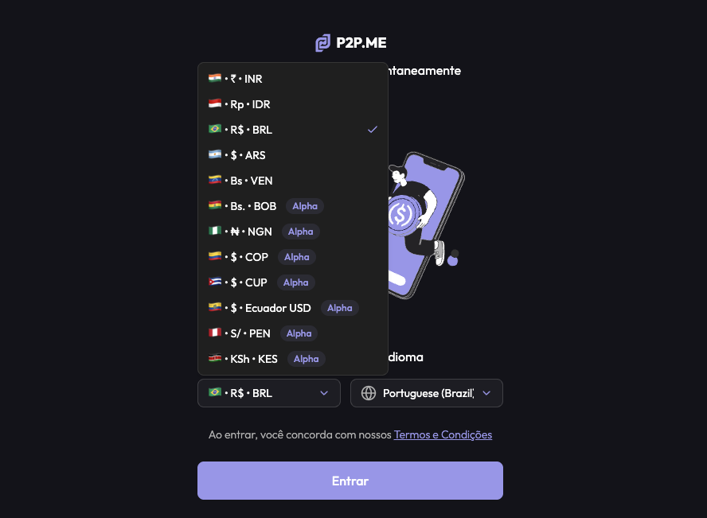
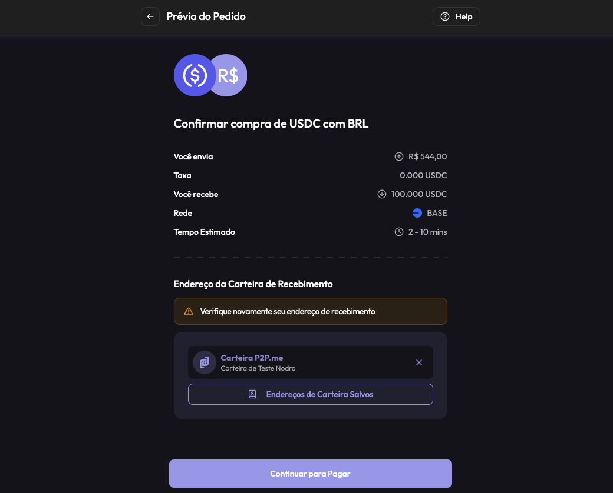
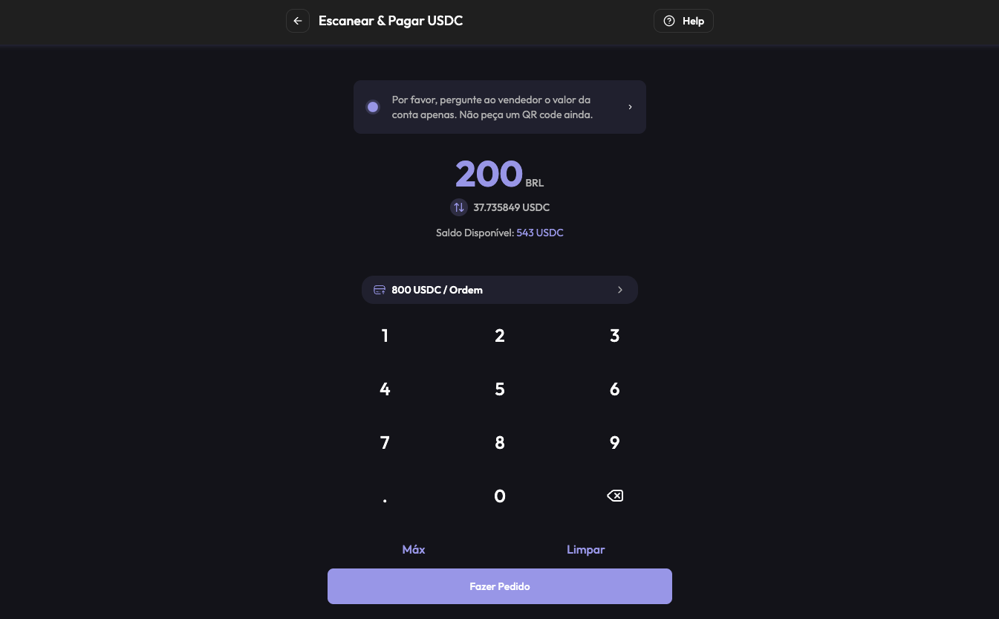
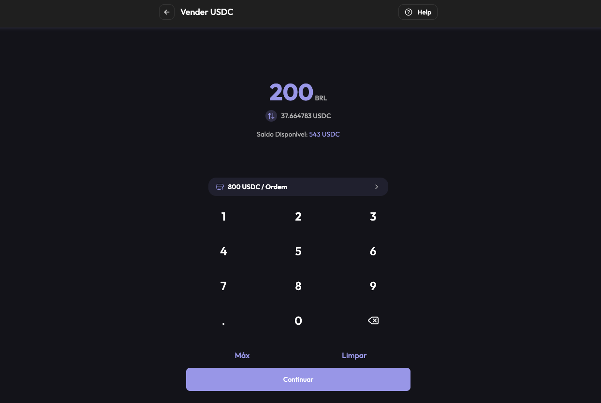

Introduction
In the first lesson you saw P2P inside an exchange: a marketplace run by a company, with the company holding the crypto in escrow. This lesson is about P2P as a way of buying and selling directly between people, often without needing an exchange account and, in some services, without traditional identity verification.
The whole lesson uses P2P.me as the example, a service used in the Brazilian community to turn reais into USDC and to spend USDC through Pix and QR codes. Everything here describes how the service presents itself and how community guides use it; terms, limits and availability change, so always confirm on the official channels before sending any money.
By the end you will be able to tell manual P2P from a service with its own guarantee, follow the full flow with P2P.me (buying, spending and selling USDC), recognize the risks that remain, and keep your own records, which stay your responsibility.
Kinds of P2P
The same word covers three different things, and the difference matters.
This lesson is about the third kind, with P2P.me as the example. Since there is no exchange account in the middle, you need a wallet first, which is why it comes after the lesson about wallets.
How Trust Works
A buyer sends money by Pix and a seller sends crypto. Someone has to make sure neither side runs away. Different services solve it in different ways:
None of them is magic, and each one shifts the risk to a different place. In manual P2P, all the trust is in one person. In a service, the trust moves to rules and code and, in some cases, to a guarantee that covers the loss if something fails.
How P2P.me Works
P2P.me is a non-custodial on and off ramp for USDC, built on the Base network. You swap reais for USDC and USDC for reais, or pay a Pix or a QR code directly with USDC, and independent merchants fill the orders. The descriptions below come from what the project communicates publicly.
Other P2P options exist, each with its own model: Bisq (a desktop app with multisig escrow), RoboSats (Lightning-based, accessed through Tor, with a bond from both sides), Hodl Hodl (multisig with an arbiter, accessed on the web) and Peach (a mobile app with multisig). They are mentioned only for comparison; compare fees, limits, payment methods and recent incident history before choosing any service.
P2P.me Step by Step
P2P.me has two main uses: turning reais into USDC (buying) and using USDC to pay a Pix or a QR code (spending), plus the way back, selling USDC to receive a Pix. In every step you deal with the app and its order, never directly with the merchant: there is no private conversation. Community guides describe the flow below, and limits, verification and the network in use appear in the app, so treat the numbers here as examples.
Step 1. Access the official app and sign in
Open the app from the official site or from the links on the official profiles, choose Brazil and Brazilian reais, and sign in with an e-mail, which creates a wallet inside the service. The service works with USDC on the Base network. It also accepts deposits from other networks and converts them to USDC on Base, as an integrated bridge, so check the network and the address shown before sending anything.
Open P2P.me ↗ partner link

- 1Open the app from the official site or an official profile link.
- 2Choose Brazil and Brazilian reais as the local currency.
- 3Sign in and note the address of the wallet created and the network it uses.
Step 2. Buy USDC with Pix
Choose to buy USDC, enter the amount in reais and check how many USDC you will receive. A liquidity provider takes the order and shows the Pix details. Pay in the exact amount shown, and confirm only after the money has left your account. The service does not require that the paying account be yours. When the provider confirms, the USDC is released to your wallet in the service.

- 1Choose to buy USDC and enter the amount in reais.
- 2Check the amount of USDC, the rate and any fee before confirming.
- 3Pay the Pix shown in the exact amount and keep the proof.
- 4Wait for the provider to confirm and for the USDC to appear in your balance.
Step 3. Raise your limit (optional)
New accounts start with a low limit. The project describes verification with zero-knowledge proofs, which prove something about you (for example, that you have an account on a social network) without handing your personal data to the service, to raise the limit. Follow the instructions in the app, and use only the official tools it indicates.
Step 4. Pay a Pix or a QR code with USDC
To spend, choose the option to scan a QR code, or to send to a Pix key, enter the exact amount in reais and answer the anti-fraud question if the app asks. The recipient does not need to be you: you can pay someone else, including bank slips that accept payment by Pix. A liquidity provider accepts the order and makes the Pix from their bank account, usually within a few minutes. The receipt is not automatic: if you need it, request it in the order, and keep it.

- 1Choose to scan a QR code or to send to a Pix key.
- 2Enter the exact amount in reais and check the USDC that will be spent.
- 3Answer the anti-fraud check if the app asks, then confirm the order.
- 4Wait for the provider to pay, and keep the receipt.
Step 5. Sell USDC and receive a Pix
To go back to reais, choose to sell USDC, enter the Pix key that will receive the money and the amount, and confirm. A liquidity provider takes the order and sends the Pix. Check the key and the amount before confirming, since a Pix cannot be undone, and keep the receipt for your records.

- 1Choose to sell USDC and enter the amount.
- 2Enter the Pix key that will receive the money and check it carefully.
- 3Check the amount in reais you will receive and confirm the order.
- 4Wait for the provider to send the Pix and check your bank account.
Step 6. Move the rest to your own wallet
A balance inside the service is not yet in your own wallet. Send USDC to the address of your wallet on the same network, after a small test, as in the wallets lesson. Bitget Wallet is a good fit here: it supports Base, and the company describes gas-free transfers and swaps on the network, which means you may not need ETH to move the USDC (conditions and limits can change, so check the app). If the service lets you export the private key of the wallet it created, treat that key like a recovery phrase: never share it.
Risks and Scams
Risk in P2P depends a lot on where the trade happens. Trading directly with a person has the risks most people have heard about. A service with an order inside the app, the crypto locked by the protocol and its own guarantee changes most of them, but not all.
What still applies, even when using a service like P2P.me:
Privacy and Your Records
Services that do not ask for traditional identity verification can reduce the personal data they hold about you, and that is a real privacy benefit. That does not make your activity invisible: your wallet and your bank still show the movements, and the blockchain is public.
It also does not change your own obligations. As seen in the first lesson, a service that does not report on your behalf leaves the record of your operations to you, and the rules for individuals who use platforms without a link to Brazil are in force. Keep the receipt, the date, the amount in reais, the rate and the transaction hash of every trade, and check the current rules with the Receita Federal or with an accountant who knows crypto.
Summary
- There are three kinds of P2P: inside an exchange (depends on the company), manual (depends on one person) and through a service with its own guarantee, which delivers to a wallet you control.
- Trust is built by liquidity providers, multisig escrow, Lightning bonds or reputation. Each one shifts the risk to a different place: a person, rules and code, or a guarantee.
- P2P.me is a non-custodial ramp for USDC on Base: merchants called liquidity providers fill the orders, and you can buy USDC with Pix, pay a Pix or QR code with USDC, and sell USDC to receive a Pix.
- Limits start low and can be raised with zero-knowledge verification. The cost is in the quote, so read the final amount before confirming.
- Pay only as the order instructs, in the exact amount, and mark the payment only after the money left your account.
- Compared with manual P2P, an order inside a service with its own guarantee takes away the classic scam of the seller who disappears, since, according to the project, the platform covers it. The risks that remain are bank blocks, copies of the service and pressure.
- Fewer personal data held by the service is a privacy gain, but it does not make you invisible nor remove your obligations. Keep your own records.
Glossary
- Non-custodial
- A service that never holds your keys or your assets on its own.
- On-ramp
- A way of turning local currency into crypto.
- Off-ramp
- A way of turning crypto back into local currency.
- Liquidity provider
- A merchant that holds assets and fills other users' orders.
- Multisig
- A wallet that needs more than one signature to move funds.
- Bond
- A deposit locked during a trade and returned when it is completed correctly.
- Hold invoice
- A Lightning payment that stays pending until a condition is met.
- KYC
- Know your customer: identity verification required by a platform.
- Transaction hash
- The unique identifier of a transaction on a blockchain.
Quiz
Check your understanding of this lesson before moving on. Incorrect answers point you straight back to the relevant section.
This quiz is for practice and does not grant a badge. Badges are earned by completing the modules of Crypto A to Z.
1. What is the main difference between manual P2P and a service like P2P.me?
Correct, well done.
Not quite, review Kinds of P2P and try again.
2. How do P2P services make sure neither side runs away?
Correct, well done.
Not quite, review How Trust Works and try again.
3. Who fills your order in P2P.me?
Correct, well done.
Not quite, review P2P.me Overview and try again.
4. What do zero-knowledge proofs do in the service?
Correct, well done.
Not quite, review P2P.me Overview and try again.
5. Which network does P2P.me use for USDC?
Correct, well done.
Not quite, review P2P.me Step by Step and try again.
6. When can you confirm a Pix payment in the order?
Correct, well done.
Not quite, review P2P.me Step by Step and try again.
7. In the step by step, who can be the recipient of a Pix paid with USDC?
Correct, well done.
Not quite, review P2P.me Step by Step and try again.
8. A "support" account in a direct message asks you to pay outside the service. What do you do?
Correct, well done.
Not quite, review Risks and Scams and try again.
9. Why do services suggest a dedicated bank account for P2P?
Correct, well done.
Not quite, review Risks and Scams and try again.
10. A service does not ask for traditional identity verification. What does that mean for your records?
Correct, well done.
Not quite, review Privacy and try again.
You scored 0 out of 10 correct.